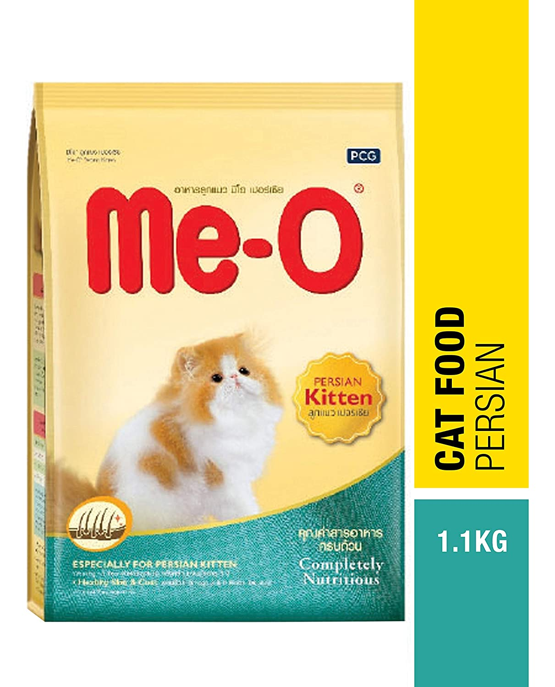
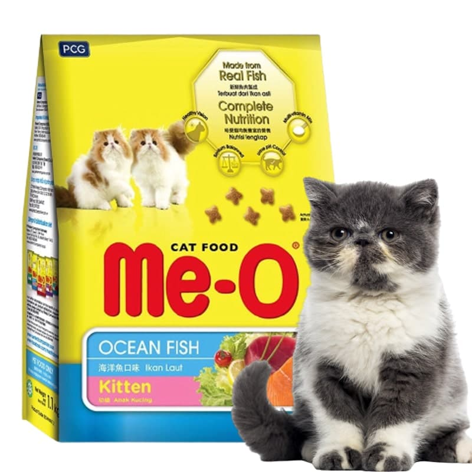
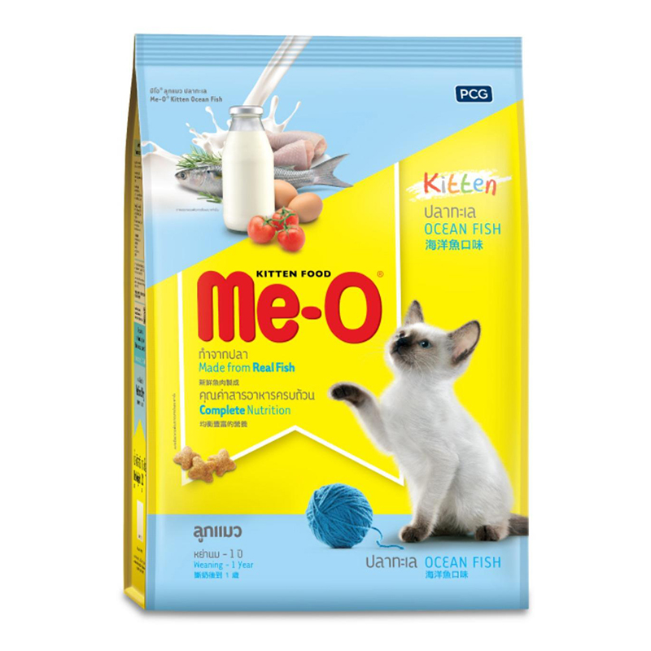

Home
Nguồn gốc sản phẩm
Ưu điểm:
Thức ăn cho mèo thương hiệu Me-O
HSD trên 11 tháng
400.000 VND 360.000 VNĐ
Nguồn gốc sản phẩm
Me-O là thương hiệu thức ăn cho mèo rất nổi tiếng có trụ sở sản xuất tại Thái Lan, được nhiều khách hàng trên thế giới biết đến với đa dạng các loại thức ăn cho mèo, được hãng sản xuất dựa trên dây chuyền hiện đại.
Ưu điểm:
Thức ăn của Me-O còn có những sản phẩm chăm sóc riêng cho làn da và lông mèo.
Các dưỡng chất trong sản phẩm Me-O cung cấp canxi giúp chăm sóc hàm răng mèo và khung xương chắc khỏe.
Không chứa hóa chất và các chất độc hại.
Dễ tiêu hóa, tránh tình trạng mèo khó tiêu, bị táo bón.
Chọn mua Sản phẩm tiếp theo
Thành phần: Ngũ cốc nguyên hạt (bắp và gạo), bột sản phẩm gia cầm phụ, thực vật (dầu nành và bắp), bột cá, bột sắn, mỡ gà, men sấy khô, bột tiêu hóa cá, thịt cá thu, muối iot, taurine, vitamin và khoáng chất, chất chống oxy hóa, màu thực phẩm.
HDSD: Xem trên bao bì.
Bảo quản: Nơi khô ráo, thoáng mát, tránh ánh sáng trực tiếp.
HDSD: Xem trên bao bì.
Bảo quản: Nơi khô ráo, thoáng mát, tránh ánh sáng trực tiếp.